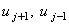

|
2.2. Понятие порядка аппроксимации
Выясним, с какой точностью конечные разности (2.5), (2.6), (2.7) аппроксимируют значение производной функции u в точке xj. Для этого разложим значения функции  в ряд Тейлора относительно точки xj:
Подставляя выражение (2.9) в правую конечную разность (2.5), получаем:
Учитывая, что производные любых порядков функции u ограничены в точках интервала [a; b], а величина h после выполнения операции обезразмеривания переменных не будет превышать 1, наиболее существенный вклад в ошибку аппроксимации вносит слагаемое, в котором порядок h наименьший. На основании этого говорят, что рассматриваемая конечная разность имеет порядок аппроксимации по h, соответствующий этой наименьшей степени h в выражении для ошибки аппроксимации. Таким образом, понятие "порядок аппроксимации" характеризует точность, с которой разностный оператор аппроксимирует производную функции u в точке xj: чем выше порядок аппроксимации, тем точнее аппроксимация и, соответственно, меньше её ошибка. В случае правой конечной разности наибольший вклад в ошибку аппроксимации вносит второе слагаемое в правой части выражения (2.11) и, следовательно, правая конечная разность имеет первый порядок аппроксимации, что записывается в виде:
Подставляя выражение (2.10) в левую конечную разность (2.6), получаем:
Подставляя выражения (2.9), (2.10) в центральную конечную разность (2.7), получаем:
|